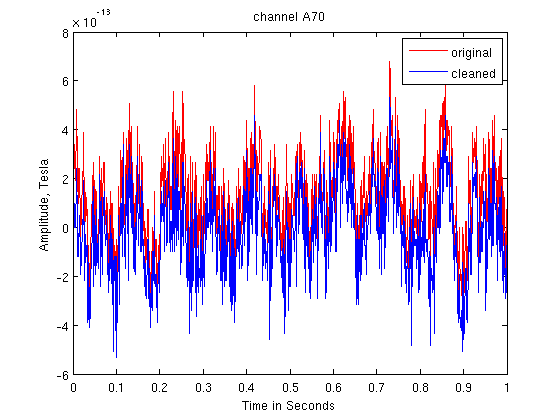
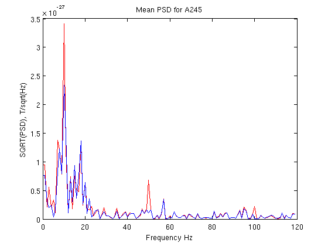

Contents
pdf4D method for reading (and writing) 4D-Neuroimaging data
pdf=pdf4D('c,rfhp0.1Hz');
chan='A70';
chi=channel_index(pdf,chan,'name');
data1 = read_data_block(pdf,[1 1018],chi);
cleanpdf=pdf4D('xc,hb,lf_c,rfhp0.1Hz');
data2=read_data_block(cleanpdf,[1 1018],chi);
plot the channel for original and cleaned files
timeline=0:(1/1017.25):1;
plot(timeline,data1,'r')
hold on
plot(timeline,data2,'b')
xlabel ('Time in Seconds');
ylabel('Amplitude, Tesla');
title(['channel ',chan])
legend ('original','cleaned')

calculate and plot power spectrum
[data1PSD, freq] = allSpectra(data1,1017.25,1,'FFT');
[data2PSD, freq] = allSpectra(data2,1017.25,1,'FFT');
figure;plot (freq(1,1:120),data1PSD(1,1:120),'r')
hold on;
plot (freq(1,1:120),data2PSD(1,1:120),'b')
xlabel ('Frequency Hz');
ylabel('SQRT(PSD), T/sqrt(Hz)');
title('Mean PSD for A245');
